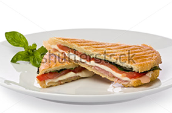

Welcome
Mobile Panini is the culmination of the dream of Antonio and Carmen
Dolcini, who came to America looking to serve people the
authentic recipes learned from their Sicilian family.
Antonio began work as a child in his grandmother's deli where he
learned the age-old secrets of Sicilian cooking. He refined his
technique at the Culinary Institute of Milan. His younger brother,
Carmen, with no less of a love for cooking and good food, also
worked in the deli and became well-acquainted with the open-air
fresh food markets of his home town. Carmen too, is a proud
graduate of the Culinary Institute of Milan.
Now you can enjoy what they have learned and mastered, right outside
your door; but with no compromises in freshness or delicacy of preparation.
We've partnered with